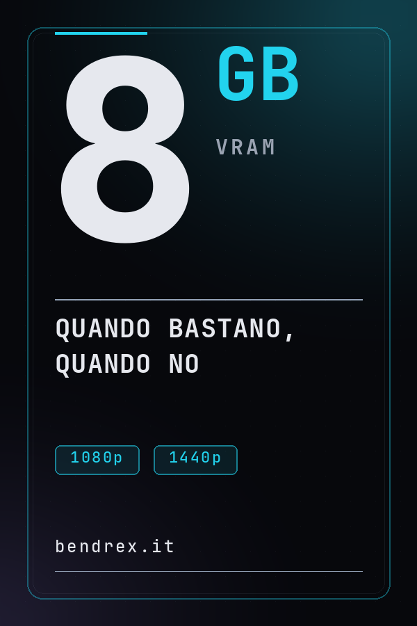

8 GB di VRAM: quando bastano e quando no

Un terzo dei PC gaming ha 8 GB di memoria video e oltre metà gioca in Full HD. Il punto non è la risoluzione: è quanto pesano le texture.
La discussione sugli 8 GB di memoria video finisce sempre in due tifoserie: chi li considera finiti e chi li difende. I dati permettono una risposta meno netta e più utile: dipende da cosa il gioco tiene in memoria, non dalla risoluzione scelta nelle impostazioni. Nessun produttore né ente di standardizzazione pubblica una tabella che leghi i GB alla risoluzione: esistono i requisiti dichiarati dai giochi e i test comparativi con metodo pubblicato. Su questo si può ragionare.
Quanta VRAM serve a 1080p
La base di partenza è la Steam Hardware Survey, letta il 20 novembre 2026: la quantità più diffusa è 8 GB di VRAM, al 33,90%, in calo dell'1,88% nel mese; la risoluzione più diffusa è 1920×1080, al 51,93%. Un terzo dei PC gaming sta sugli 8 GB e oltre metà gioca in Full HD: la domanda non è teorica, riguarda la macchina di casa.
Il primo equivoco è credere che i GB se ne vadano con la risoluzione. Un buffer di colore occupa larghezza × altezza × 4 byte: circa 8 MB a 1080p, 15 MB a 1440p, 33 MB a 4K. Un gioco usa molti buffer insieme (colore, profondità, normali, motion vector, buffer temporali dell'upscaling) e arriva a centinaia di MB, non a GB.
| Cosa occupa memoria | Peso | Nota |
|---|---|---|
| Un buffer colore a 1080p | ~8 MB | calcolo sui pixel, non una misura |
| Un buffer colore a 1440p | ~15 MB | idem |
| Un buffer colore a 4K | ~33 MB | idem |
| Texture 4096×4096 compressa (BC1/BC7), con mipmap | 11–22 MB | una singola texture |
| Texture 4096×4096 non compressa, con mipmap | 89 MB | una singola texture |
Un livello AAA carica migliaia di texture: è lì che nascono i GB. Ecco perché la qualità delle texture pesa più della risoluzione. Nei test citati più avanti si passa da «giocabile» a «crash» cambiando solo il texture pool, senza toccare la risoluzione.
Secondo equivoco: i GB sono capacità, non velocità. Contano cose diverse. La capacità decide se il working set ci sta. La banda decide quanto costa riempirla: Xbox Series S ha 10 GB GDDR6, ma 224 GB/s sui primi 8 GB e 56 GB/s sui restanti 2, e la parte lenta non è utilizzabile per le texture allo stesso modo. L'architettura aggiunge compressione dei colori e delle texture, gestione delle allocazioni, cache. Due schede con gli stessi GB possono quindi comportarsi in modo diverso.
Chi arriva da una ricerca del tipo «8 gb vram 1080p» cerca una risposta secca; quella che i dati sostengono è condizionata alle texture. A 1080p, con preset medi e upscaling attivo, gli 8 GB reggono nella maggior parte dei casi. Due titoli pesanti indicano una scheda da 8 GB come requisito raccomandato, con risoluzione interna ridotta: Resident Evil Requiem chiede 1080p con upscaling da 720p a 60 fps, e Monster Hunter Wilds 1080p upscalato da 720p a 60 fps con Frame Generation e preset Medium. I minimi di entrambi partono da una 6 GB (GTX 1660) con upscaling da 640p–720p a 30 fps.
Il dato è reale, ma va letto: i produttori chiamano «8 GB raccomandati» un 1080p che internamente è 640p–720p e con preset medi. Monster Hunter Wilds dichiara anche 16 GB di RAM di sistema, che fanno da tampone quando la memoria video trabocca.
VRAM 8 GB: cosa cambia a 1440p e in ray tracing
Alla risoluzione più alta si aggiunge un secondo consumatore: il ray tracing tiene in memoria GPU le strutture di accelerazione della scena, che l'applicazione deve allocare e compattare — la specifica DirectX Raytracing prevede flag dedicati proprio per ridurne l'ingombro. Non esistono numeri pubblici affidabili sul suo costo in GB: qui conta la direzione, non una cifra.
A 1440p il limite smette di essere un'opinione. ComputerBase ha confrontato la stessa GPU in versione 8 e 16 GB, tarando le impostazioni per circa 60 fps a 2560×1440 sulla 16 GB e lasciandole identiche sulla 8 GB.
| Test (stessa GPU, 8 GB vs 16 GB) | Media | Caso peggiore | Con PCIe 4.0 |
|---|---|---|---|
| RTX 5060 Ti, 2 maggio 2025 | −13% fps, −21% frametime | 34 fps contro 57 | −14% media, −17% sul 1% |
| RX 9060 XT, 13 giugno 2025 | −13% media, −15% sul 1% | −44% con stutter | −22% media, −20% sul 1% |
In entrambi i test un gioco diventa stabile solo abbassando il texture pool a Medium: sopra, crasha. Le due marche si comportano in modo simile, segno che il problema è di capacità, non di architettura. La conclusione utile è che con le impostazioni giuste, texture medie e upscaling attivo, un 8 GB è giocabile a 1440p: il costo non è «non parte», è un frame pacing peggiore, con cali improvvisi e texture declassate dal gioco stesso. Chi guarda solo gli fps medi non vede il problema.
La stessa domanda con la risoluzione alzata, «8 gb vram 1440p», ha finalmente una risposta misurata: è la tabella qui sopra. A 4K la situazione è peggiore, ma va detto come sta: non esiste un test pubblico con metodo che misuri una 8 GB a 4K tra le fonti lette. Si può solo inferire che i buffer crescono (circa 33 MB contro 15 MB a 1440p) mentre il pool di texture resta lo stesso. È un'inferenza, non una misura.
Sul mercato il margine ha un prezzo di listino noto: RTX 5060 Ti 8 GB a 399 € e 16 GB a 449 € (aprile 2025), RX 9060 XT 8 GB a 315 € e 16 GB a 369 € (giugno 2025), cioè 50–54 € di differenza. Il prezzo di strada però può superare il listino: il 13 novembre 2026 una RTX 5060 da 8 GB stava a 521,71 € su Amazon.it. Il prezzo attuale delle versioni da 16 GB non è stato verificato.
Cosa succede quando la VRAM finisce
Il messaggio «memoria video insufficiente», quando compare, arriva a fine corsa: prima il gioco perde fluidità. Quando il working set supera la capacità, il driver sposta le risorse in eccesso nella RAM di sistema e le riporta sulla GPU passando dal bus PCIe. Il PCIe è ordini di grandezza più lento della memoria video, quindi il sintomo non è «qualche fps in meno»: è stutter, frame pacing rotto, texture che compaiono in ritardo o a risoluzione più bassa. Nei motori che non degradano con grazia si arriva al crash, come nei due test citati sopra la soglia di texture Medium.
Più il bus è stretto, peggio va. La RTX 5060 Ti ha 8 lane PCIe: passando da 5.0 a 4.0 perde un altro 14–17% quando la memoria è satura. La RX 9060 XT, con 16 lane, perde il 22% di media e il 20% sul percentile più lento. Un PC vecchio con una scheda 8 GB nuova è il caso peggiore, non il più economico. Attenzione anche ai contatori: «il gioco usa 7,8 GB» non è una diagnosi, perché i driver allocano e tengono in cache. Conta il comportamento, cioè frametime, pop-in e stabilità.
Cosa aiuta davvero, allora. Lo streaming delle texture con sampler feedback, descritto nella specifica DirectX, evita di tenere in memoria i mip più dettagliati di tutte le texture e carica solo ciò che serve: è la tecnologia che rende gli 8 GB gestibili nei motori che la usano. L'upscaling riduce la risoluzione interna e quindi i buffer, ma non il pool di texture: non è un rimedio al limite di capacità. DirectStorage sposta la decompressione sulla GPU e la fa in place, migliorando caricamenti e continuità del flusso, ma non riduce la VRAM richiesta da un gioco. Neural Texture Compression è una dichiarazione di NVIDIA, fino a 8× di memoria texture in meno, misurata su demo con hardware RTX: al 20 novembre 2026 non risultano giochi commerciali che ne beneficiano, quindi è una prospettiva, non una soluzione disponibile.
In pratica, prima di alzare le texture a Ultra conviene leggere i requisiti del singolo gioco, che dichiarano anche la risoluzione interna e il preset: sono più informativi di qualunque tabella generica. Se stai scegliendo i pezzi, il consiglio resta lo stesso di sempre: guarda la scheda video dentro una build completa, perché alimentatore, RAM e CPU determinano quanto margine hai davvero. E vale anche per i titoli che aspetti: nella nostra scheda su GTA VI trovi cosa è confermato e cosa no, senza anticipazioni sui requisiti PC che nessuno ha annunciato.
Fonti: Steam Hardware Survey (letta il 20/11/2026); requisiti su Steam di Monster Hunter Wilds e Resident Evil Requiem (letti il 20/11/2026); ComputerBase, test RTX 5060 Ti 8 GB (02/05/2025) e RX 9060 XT 8 GB (13/06/2025); NVIDIA Developer Blog su Neural Texture Compression (06/02/2025); specifiche Microsoft DirectX Raytracing, Sampler Feedback e DirectStorage (consultate il 20/11/2026); pagina tecnica Xbox Series S (consultata il 20/11/2026); pagina NVIDIA RTX 5060 (consultata il 20/11/2026).